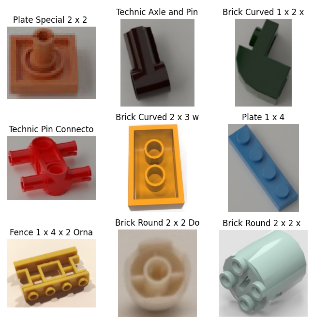
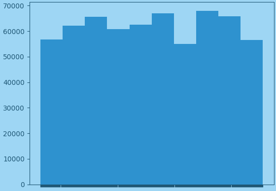
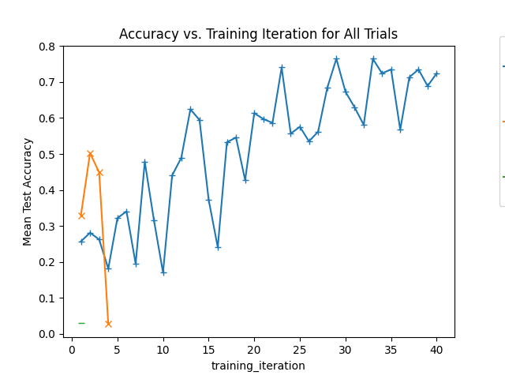
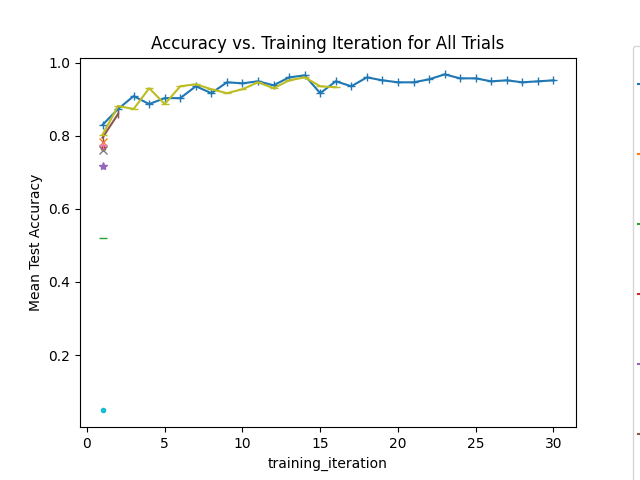

## Lego Brick Detector Find the type of a Lego brick from a foto. Bricks are identified by a number and a color. Considering only the number in this project.

### Dataset * download and unzip * exploratoy data analysis * reducing data set
#### Model * trying simpler variants * only binary classification (2 classes) * a handful of classes * quick model with [fast.ai](https://www.fast.ai/) * resnet18 * resnext50 * experiment tracking with tensorboard * final model with pytorch and lightning
#### Tuning * hyperparameter tuning with ray * analysis of checkpoints
### Download And Unpack Data Data set: lego-bricks-for-training-classification-network Can be downloaded from: [https://mostwiedzy.pl/en/open-research-data](https://mostwiedzy.pl/en/open-research-data/lego-bricks-for-training-classification-network,202309140842198941751-0) <pre><code ><script type="text/template"> url = 'https://mostwiedzy.pl/en/open-research-data/...' filename = 'file 05 - dataset.zip' DATA_SET_PATH = download_and_unpack(url, filename) </script></code></pre>
### Data Set Structure About 6.03 GB of data (compressed) The dataset consist of two parts: 1. Photos: 10% 2. Renders (synthetic data): 90% 447 different classes
The images are grouped in folders that are named after the Lego part number: <pre><code data-trim data-noescap"> # ├── photos # │ ├── 10197 # │ │ ├── c0_0_Con31_YGzI_original_1618300443534.jpg # │ │ ├── c0_1_Con31_9CX6_original_1618300433289.jpg # │ │ └── ... # │ ├── 10201 # │ │ ├── c0_1_P53_15Jj_original_1618573176305.jpg # │ │ ├── c0_1_P53_5CHe_original_1618573183733.jpg # │ │ └── ... # │ : # └─── renders # ├── 10197 # │ ├── 10197_Aqua_0_1621079008.jpeg # │ ├── 10197_Aqua_1_1621079011.jpeg # │ └── ... # ├── 11090 # │ ├── 11090_Aqua_0_1619137894.jpeg # │ ├── 11090_Aqua_0_1619194611.jpeg # │ └── ... # : </code></pre>
### Histogram of full dataset 
### Label Names Numbers are hard to memorize. Translate the number in a description. The description was taken from the [Rebrickable API](https://rebrickable.com/). <pre><code data-trim data-noescap> "10197": "Technic Pin Connector Hub with 2 Perpendicular Axles", "10201": "Bracket 1 x 2 - 1 x 4 [Rounded Corners]", "10288": "Technic Axle and Pin Connector Triple [120\u00b0 Offset]", "10314": "Brick Curved 1 x 4 x 1 1/3 No Studs, Curved Top with Raised Inside Support", "11090": "Bar Holder with Clip", "11211": "Brick Special 1 x 2 with 2 Studs on 1 Side", "11212": "Plate 3 x 3", "11213": "Plate Round 6 x 6 with Hole", "11214": "Technic Axle Pin 3L with Friction Ridges Lengthwise and 1L Axle", "11215": "Bracket 5 x 2 x 1 1/3 with Holes, Pin Bottom", "11272": "Technic Axle Connector 2 x 3 Quadruple", "11476": "Plate Special 1 x 2 with Clip Horizontal on Side", "11478": "Technic Beam 1 x 5 Thin with Axle Holes on Ends", "13349" ... </code></pre>
Using reduced dataset with * 33 classes * 4036 images
### Data Loader Load data in batches and create train, validation and test splits. <pre><code><script type="text/template">def load_data(ds, tr_train, tr_val, batch_size=64): all_ids = [i for i in range(0, len(ds.observations))] all_labels = [x["label"] for x in ds.observations] train_ids, val_ids, test_ids = create_train_test_split( all_ids, all_labels, test_size=0.2, val_size=0.1 ) ds_train = ImageFolder.from_subset(ds, train_ids) ds_val = ImageFolder.from_subset(ds, val_ids) ds_test = ImageFolder.from_subset(ds, test_ids) return DataSetModule(..) </script></code></pre>
## Model Use a pretrained resnext50 model with some basic transforms <pre><code><script type="text/template">def get_resnext50_model(num_classes, ..): net = models.resnext50_32x4d( weights=models.ResNeXt50_32X4D_Weights.DEFAULT) net.fc = nn.Sequential(nn.Linear(2048, num_classes)) common_transforms = transforms.Compose([ transforms.RandomResizedCrop(128), transforms.CenterCrop(224), transforms.ToTensor(), transforms.Normalize(mean=[0.485, 0.456, 0.406], std=[0.229, 0.224, 0.225]), ]) # .. return net, tr_train, tr_val</script></code></pre>
### Classifier Create a clasifier with the model, loss functions, metrics and optimizer
<pre><code><script type="text/template">class Classifier(L.LightningModule): def __init__(self, model=model, num_classes=num_classes, ..): # .. self.loss_fn = nn.CrossEntropyLoss() # Accuracy self.train_accuracy = torchmetrics.Accuracy( task="multiclass", num_classes=num_classes ) self.val_accuracy = torchmetrics.Accuracy( task="multiclass", num_classes=num_classes # Loss self.train_loss = torchmetrics.MeanMetric() self.val_loss = torchmetrics.MeanMetric() # ...</script></code></pre>
<pre><code><script type="text/template">def training_step(self, batch, batch_idx): x, y = batch["image"], batch["label"] logits = self.model(x) loss = self.loss_fn(logits, y) preds = torch.argmax(logits, dim=1) # Update all metrics self.train_loss.update(loss) self.train_accuracy.update(preds, y) # Log metrics for batch # ... </script></code></pre>
<pre><code><script type="text/template">def configure_optimizers(self): return torch.optim.Adam( self.parameters(), self.learning_rate, weight_decay=self.weight_decay) </script></code></pre>
### Augmentations Define some augmentation for use during hyperparameter tuning. <pre><code><script type="text/template">complex_transforms_0 = transforms.Compose( [ transforms.RandomRotation(12), transforms.RandomResizedCrop(150), transforms.ColorJitter(brightness=0.2, contrast=0.25, saturation=0.2, hue=0.1), ]) </script></code></pre>
## Trainer and Training Loop
<pre><code><script type="text/template">trainer = L.Trainer( devices="auto", accelerator="auto", enable_checkpointing=True, callbacks=[TuneReportCheckpointCallback( {"val/accuracy_epoch": "val/accuracy_epoch"}, on="validation_end", )], plugins=[RayLightningEnvironment()], # .. ) </script></code></pre>
<pre><code><script type="text/template">def training_loop(config): ds = ImageFolder(DATA_PATHS) num_classes = len(ds.classes) # transforms .. model, tr_t, tr_v = get_resnext50_model(num_classes, ..) dm = load_data(ds, ..) model = Classifier(model, num_classes=num_classes, ..) get_trainer().fit(model, datamodule=dm) </script></code></pre>
### Hyperparameter Tuning <pre><code><script type="text/template">search_space = { "additional_transforms": choice(['None', 'complex_transforms_0']), "learning_rate": uniform(1e-1, 1e-4), "weight_decay": loguniform(1e-2, 1e-4), "batch_size": choice([16, 64]), } </script></code></pre>
<pre><code><script type="text/template"> ray_trainer = TorchTrainer( training_loop, scaling_config=scaling_config, run_config=run_config, ) </script></code></pre>
<pre><code><script type="text/template">tuner = Tuner( ray_trainer, param_space={"train_loop_config": search_space}, tune_config=TuneConfig( metric="val/accuracy_epoch", mode="max", num_samples=num_samples, scheduler=scheduler, ), ) </script></code></pre>


## Future Ideas * Try other models * Tune hyperparameters * Use more data * Use more machine power * Deploy model: Web/Mobile App
## Lessons Learned * Start with limited data * Use simple model (don't be a rockstar) * Doing proper Computer Vision is * difficult * but lot of <b>fun</b>!